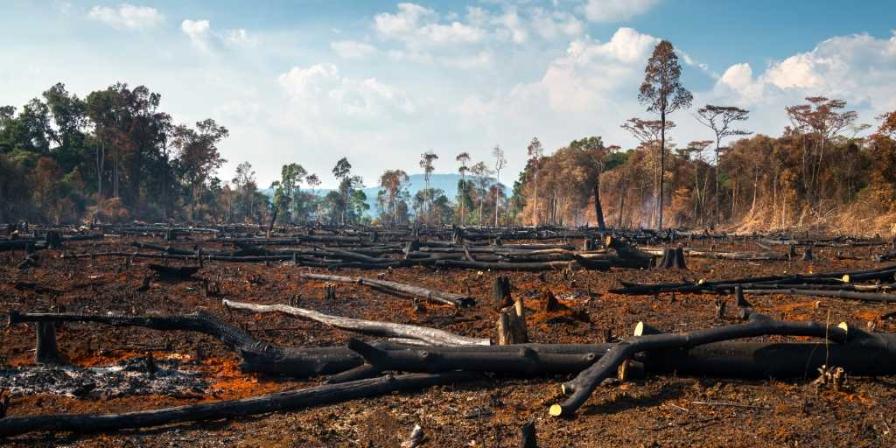

🌳 Desmatamento
- Conversão de florestas em pastagens: Uma das principais causas de desmatamento no Brasil é a transformação de florestas tropicais, como a Amazônia, em áreas de pasto para o gado. Isso resulta na perda de milhões de hectares de cobertura vegetal nativa.
- Impactos ambientais:
- Perda da biodiversidade: espécies únicas são extintas ou ameaçadas.
- Alteração do ciclo da água: árvores são fundamentais para a manutenção da umidade e chuvas.
- Liberação de carbono: árvores armazenam carbono e, ao serem derrubadas, esse carbono é liberado na atmosfera.
- Pressão sobre comunidades locais: Povos indígenas e comunidades tradicionais frequentemente perdem suas terras, cultura e sustento com o avanço da pecuária extensiva.
✅ Como reduzir o desmatamento sem acabar com o consumo de carne?
- Intensificação sustentável: Melhorar a produtividade por hectare usando tecnologias agrícolas e manejo de pasto eficiente. Isso evita a necessidade de abrir novas áreas de floresta.
- Rotação de pastagem: Alternar áreas de pasto para dar tempo de recuperação ao solo, reduzindo a degradação e o desmatamento.
- Carne de origem certificada: Consumir produtos de empresas que seguem padrões de produção sustentável e rastreável, como o selo "Carne Carbono Neutro" ou "Rainforest Alliance".
- Aproveitamento de áreas já desmatadas: Reutilizar terras degradadas ou subutilizadas em vez de abrir novas fronteiras agrícolas.
- Políticas públicas e fiscalização: Apoiar leis que incentivem boas práticas ambientais e combatam o desmatamento ilegal.
Combater o desmatamento não significa eliminar a pecuária, mas torná-la mais eficiente, consciente e alinhada com a preservação ambiental.